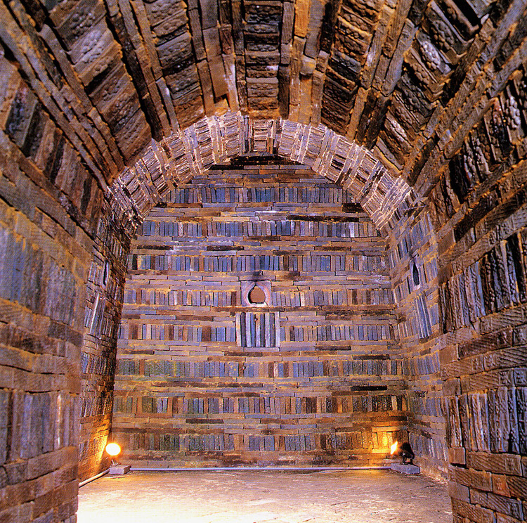
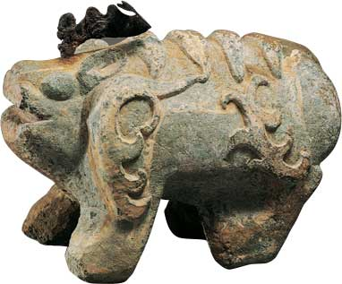
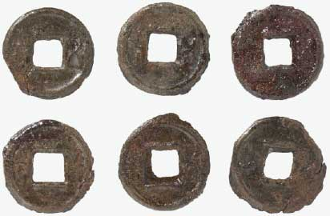
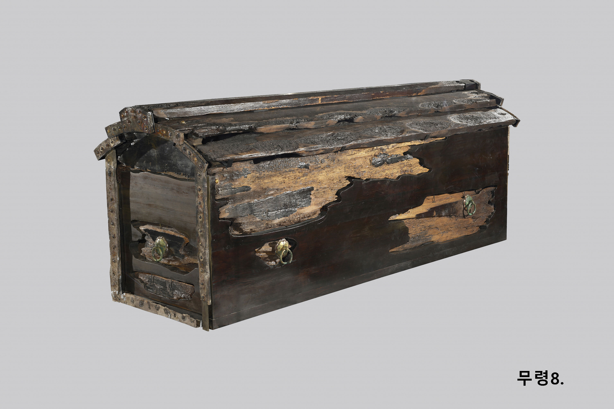

백제의 교류 살펴보기

백제의 무령왕릉에서 출토된 유물을 보고 백제가 여러 나라와 교류하였음을 알 수 있는 것에 동그라미 쳐 보자.
-

중국의 영향을 받은 벽돌무덤 양식
O -

무덤을 지키는 돌짐승은 중국의 영향을 받은 것이지만, 돌짐승의 모습은 백제 나름대로 만들어 독창적인 문화를 엿볼 수 있다.
O -
무령왕과 왕비가 묻혔다는 내용을 보여주는 묘지석
X -

중국의 화폐 오수전
O -

일본에서 자라는 나무로
O
만든 관